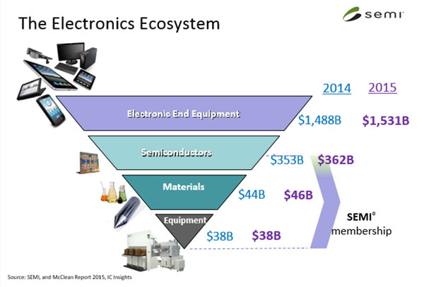

This site is to share learning of R and its application to Semiconductor nanomanufacturing. The world we live in today is largely enabled by the electronics. The electronic ecosystem is over $1TB industry, with 1/5 of the business is semiconductor and its extended supply chain.
The business can be well summed up as a inverted triangle. The semiconductor manufacturing, material and equipment are the supporting pilar of the industry. Citing a chart from Semi for the market size between 2014-2015.

The industry is driven aggressively with technology innovation and feed on data driven manufacturing process. This blog is to apply R and its package to solve some nanomanufacturing challenges.
The planned format would includes:
- Problem statement
- Technical challenge
- Data analytical challenge
- Work flow
- Solution with R
- Existing tools
- New development
- Round up